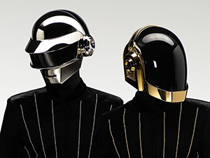

El Grupo
Daft Punk fue un dúo francés de música electrónica formado en 1993 en París por Thomas Bangalter y Guy-Manuel de Homem-Christo. Alcanzaron popularidad a fines de la década de 1990 como parte del movimiento house francés, combinando elementos de la música house con funk, disco, rock y pop.